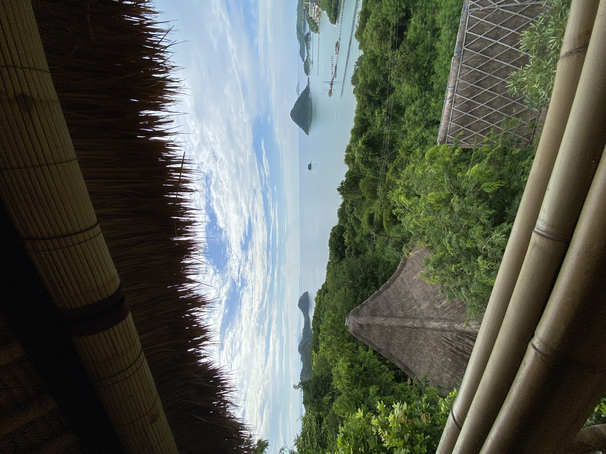
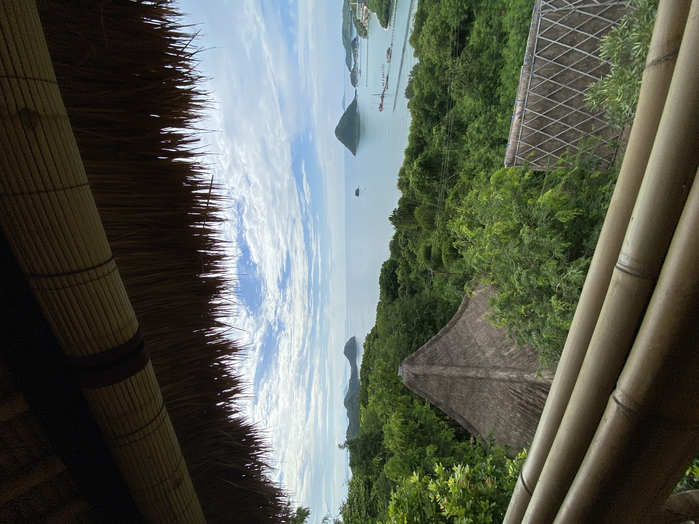

Why Indonesia?
Indonesia, the country of 17,000 islands
Indonesia is a breathtakingly beautiful country. With thousands of islands, hundreds of languages and dialects and home to the second largest coastline in the world, Indonesia is rich with culture, beaches and wildlife.
From Bali to the Gili Islands to Komodo National Park, there is something for every type of traveller. Indonesia is known for its crystal clear blue water, cascading mountains and delicious food. The country is rooted in religion and you will find temples and mosques everywhere you go. The people are warm, welcoming and some the nicest I have ever met.
Explore
My favourite destinations

Labuan Bajo
A beautiful sea side town located on Flores Island. It is the gateway to Komodo National Park and is known for stunning sunsets and lush green hillsides.
Where to stay
There are many beautiful huts on the island with access to the ocean and wonderful bars and restaurants. I stayed at at Eland Hillside Bungalows overlooking the sea and neighbouring islands.
Why you should go here
Komodo Island is most easily accessed from Labuan Bajo. Easily book a tour to see the Komodo Dragons, snorkle with manta rays and visit the pink beach!
Learn more
Gili T
Gili Trawangan is a beautiful island located off the coast of Bali. Enjoy the slow paced island life by horse or by bike. There are no vehicles on the island!
Where to stay
I stayed at the stunning Belukar Villas when I visited the island. The grounds are prestine with a pool, delicious food options and friendly staff.
Why you should go here
Gili T is known for it's crystal clear blue water. There are countless ways to explore the area including kayaking, snorkelling and scuba diving. Check out Island Guide for a life changing adventure!
Learn morePadar Island
Padar Island has one of the most beautiful view points I have ever seen! After a short, 30 minute up hill walk from the beach you reach your destination with a view of 3 secluded beaches and mountains.
Where to stay
The island is only open for day trips as there is no accommodation. Be sure to organize your boat for an early morning departure, ensuring you arrive before the island gets busy with tourists.
Why you should go here
The reward for such short hike can not be understated. The magnificent beaches and mountains are sure to take your breath away.
Learn moreGallery
Favourite photos from Indonesia
 
